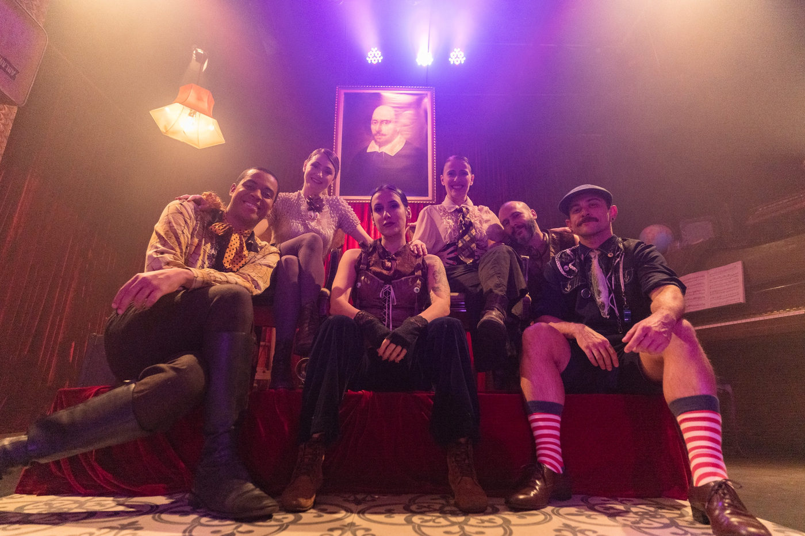

"Um Porre de Shakespeare" prorroga temporada até 22 de julho no Teatro do Núcleo Experimental

Espetáculo combina Shakespeare com doses de bebida alcoólica, trazendo uma experiência única para o público. A peça "Um Porre de Shakespeare", do Núcleo Experimental de Teatro, tem sua temporada prorrogada até o dia 22 de julho. A partir desta semana, as sessões serão realizadas às sextas, sábados, domingos e segundas.
A versão brasileira do espetáculo, que faz sucesso em Chicago e Nova York, estreia no Teatro do Núcleo Experimental, na Barra Funda.
Em cada sessão da peça, um dos atores ou atrizes ingere cinco doses de uma bebida alcoólica e deve encenar seu papel em estado de embriaguez, enquanto o restante do elenco permanece sóbrio. A direção é assinada por Zé Henrique de Paula, que também é responsável pela cenografia.
O elenco conta com Bruna Guerin, Fabiana Tolentino, Luciana Ramanzini, Cleomácio Inácio, Dennis Pinheiro, Gabriel Lodi e Rodrigo Caetano.
Zé Henrique de Paula assistiu ao espetáculo em Nova York em 2023 junto com a produtora Renata Alvim. "Nos divertimos muito e então decidimos trazer a peça ao Brasil, em uma coprodução entre a Rega Início e o Núcleo Experimental", diz Zé Henrique.
Na trama, a Sociedade Literária do Velho Bardo Bêbado é composta por seis atores e atrizes que se encontram todas as noites para celebrar Shakespeare e sua tragédia mais famosa, "Macbeth". Infelizmente (ou felizmente), um dos integrantes do elenco toma cinco doses de uma bebida forte antes de começar a peça, e cabe aos outros atores manter a história nos trilhos.
Dois espectadores são escolhidos para assumir os papéis de rei e rainha, participando de forma especial na montagem.
Ficha Técnica
Elenco: Bruna Guerin, Fabiana Tolentino, Luciana Ramanzini, Cleomácio Inácio, Dennis Pinheiro, Gabriel Lodi e Rodrigo Caetano
Adaptação e Direção: Zé Henrique de Paula
Iluminação: Fran Barros
Cenografia: Zé Henrique de Paula
Figurinos: Ùga Agú
Assistente de Cenografia: Dani Bezerra
Assistente de Figurinos: Cauã Stevaux
Cenotécnico: Jhonatta Moura
Fotos: Adriano Dória
Design Gráfico: Laerte Késsimos
Redes Sociais: 1812 Comunicação
Assessoria de Imprensa: Pombo Correio
Produção: Renata Alvim e Zé Henrique de Paula
Produção Executiva: Luanda Scandura
Assistente de Produção: Victor Lima
Realização: Rega Início e Núcleo Experimental
Serviço
Espetáculo: Um Porre de Shakespeare, com Núcleo Experimental de Teatro
Temporada: 1º de junho a 22 de julho
Sessões:
A partir de 5 de julho: Sextas, sábados, segundas, às 20h; domingos, às 18h
Local: Teatro do Núcleo Experimental – Rua Barra Funda, 637 – São Paulo, SP
Ingressos:
Mezzanino: R$60 (inteira) e R$30 (meia-entrada)
Palco: R$80 (inteira) e R$40 (meia-entrada)
Mesa: R$100 (inteira) e R$50 (meia-entrada)
Rei & Rainha: R$120 (inteira) e R$60 (meia-entrada)
Vendas Online: Sympla (com taxa de conveniência)
Bilheteria Física: Todos os dias das 12h às 18h; em dias de espetáculos, até o início da apresentação
Duração: 2h10min (com 10 minutos de intervalo)
Classificação Etária: 18 anos; menores de 18 anos acompanhados dos pais ou responsáveis legais